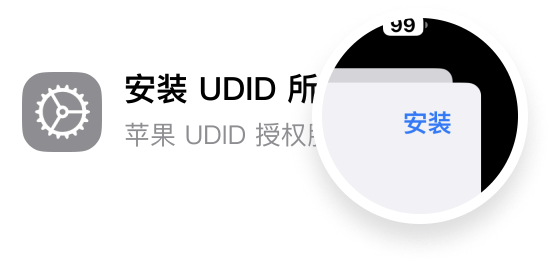
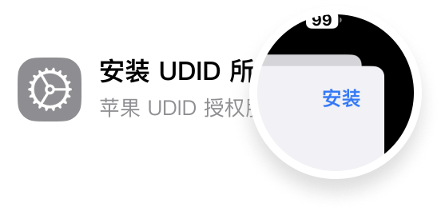

获取UDID 复制UDID OTA Block
请使用 iPhone 或 iPad 上的 Safari 浏览器打开本页面，即可快速获取 UDID
步骤说明

请点击 允许 安装描述文件，回到桌面，打开 设置 - 通用，找到并点击打开 VPN 与设备管理

在弹出的页面中点击右上角的 安装 按钮，然后输入 锁屏密码 进行安装
请使用 iPhone 或 iPad 上的 Safari 浏览器打开本页面，即可快速获取 UDID
请点击 允许 安装描述文件，回到桌面，打开 设置 - 通用，找到并点击打开 VPN 与设备管理

在弹出的页面中点击右上角的 安装 按钮，然后输入 锁屏密码 进行安装
什么是UDID?
UDID，是 iOS 设备的一个唯一识别码，每台 iOS 设备都有一个独一无二的编码，这个编码，我们称之为识别码，也叫做UDID（ Unique Device Identifier）。
扫描后系统提示输入密码?
如果您扫描后系统提示输入密码，请输入锁屏密码。
获取 UDID 是否安全?
安全，您可以放心使用。该功能不会在第三方服务器上存储您的任何数据，并且传输到浏览器的所有数据都使用256 位 AES 加密，以防止劫持。